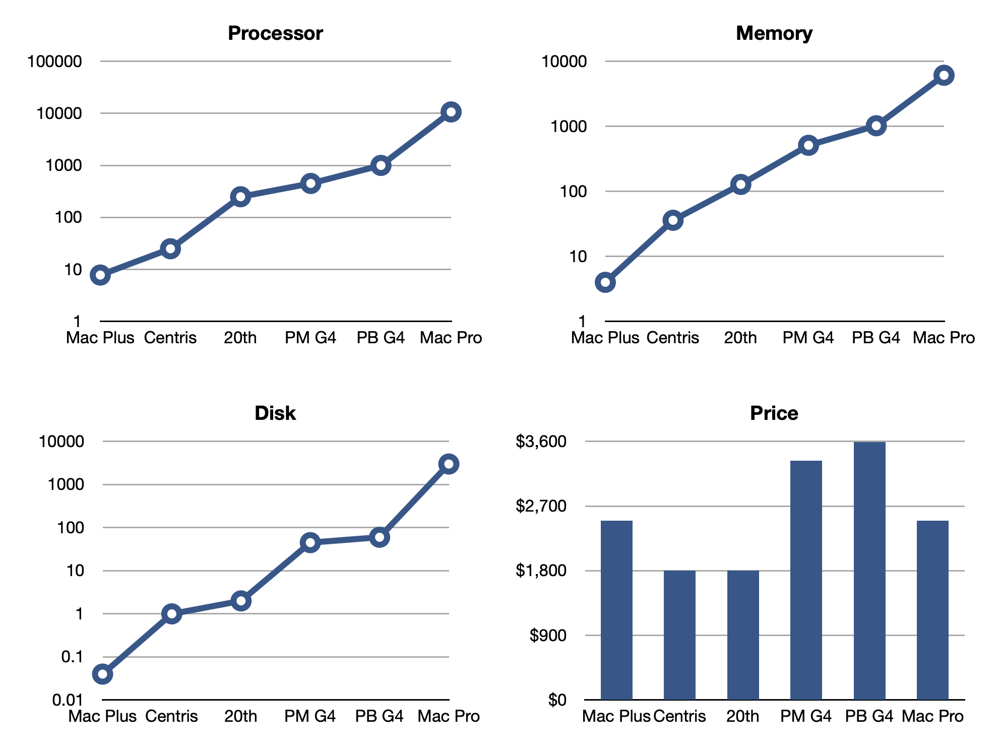

🖥 Computers
Macintosh Plus
Mac Centris 610
Mac Quadra 660AV
Twentieth Anniversary Mac
Power Mac G4
(1999)
PowerBook G4
(2001)
Mac Pro
(2006)
Mac Pro
(2011)
MacBook
(2016)
Macintosh SE
Macintosh Portable
Macintosh IIci
Macintosh IIfx
PowerBook 140
PowerBook 520
PowerBook Duo 2300c
Newton MessagePad 100
Newton MessagePad 110
Newton MessagePad 130
Newton MessagePad 2000
eMate 300
iPod (3rd gen)
iPod (5th gen)
iPod shuffle (3rd gen)
iPod touch (1st gen)
iPhone 6
iPhone 6s
iPhone 11 Pro
iPhone 16 Pro
iPad (1st gen)
iPad (3rd gen)
iPad (6th gen)
Apple Watch (Series 0)
Apple Watch (Series 1)
